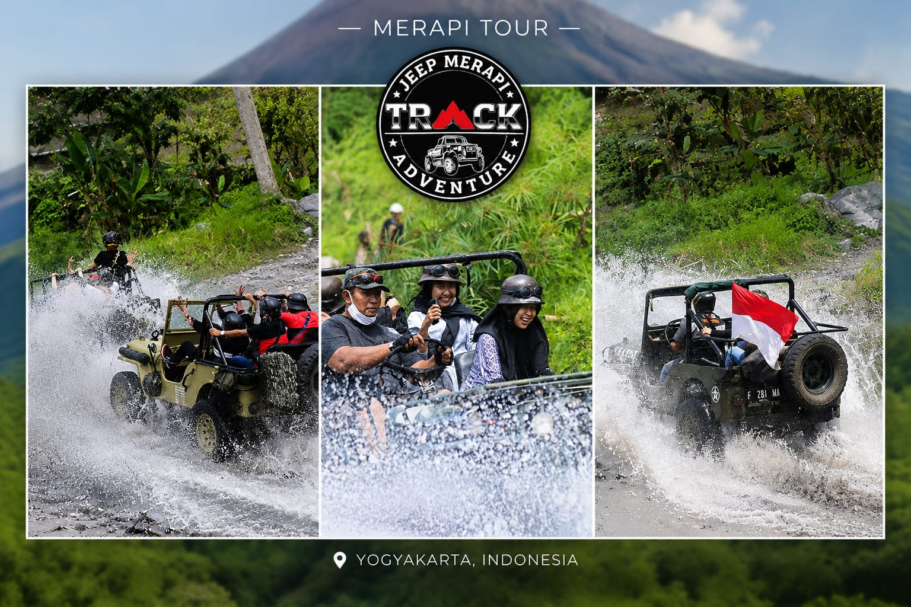

Jeep Wisata Merapi
Lebih dari Sekadar Tour
Jeep Wisata Merapi berdiri sejak tahun 2014, berawal dari kecintaan kami terhadap Gunung Merapi dan keinginan berbagi keindahan serta sejarahnya kepada dunia.
Kami bukan sekadar menyediakan kendaraan. Kami menghadirkan pengalaman — dari dentuman roda jeep di tanah lava, cerita pilu letusan 2010 di Museum Sisa Hartaku, hingga keagungan panorama Merapi dari Bunker Kaliadem.
0
Wisatawan Puas
0
Tahun Pengalaman
0
Unit Armada